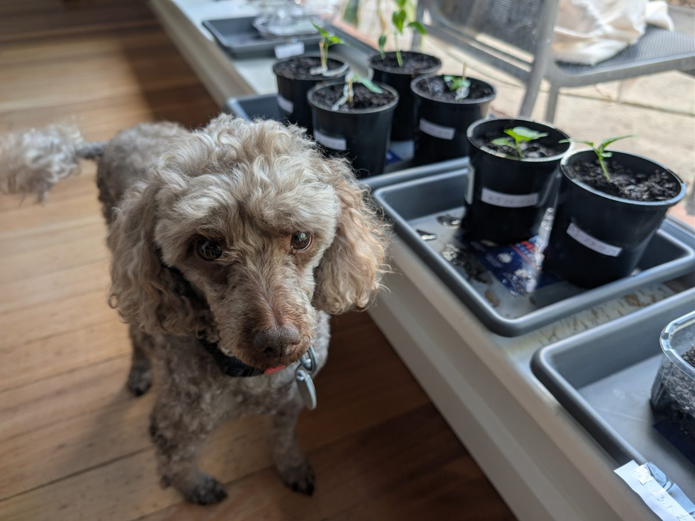

Keep track of your garden,
not spreadsheets.
GardenLog is a digital record for your garden. Track what you planted, what happened next, and what needs attention.
Built for home gardeners and propagators managing more than memory and scattered notes can handle.

The problem
Gardening becomes surprisingly difficult to track
Built for home gardeners, beginners, and propagators managing multiple plants.
Scattered records
Notes end up scattered across notebooks, labels, photos, calendars, and memory.
Missed care and milestones
It's easy to forget when something was sown, watered, repotted, fertilised, or moved.
Propagation complexity
Propagation trays make it difficult to track varieties, individual cells, and germination results.
No useful growing history
Different soil mixes and growing conditions get recorded, if at all, without an easy way to compare what actually worked.
Gardeners need a simple way to remember what they planted, where they planted it, what they did, what happened next, and what needs attention.
Many popular gardening apps lead with plant identification or general care advice. GardenLog focuses on your own plants and growing history.
What it does
Your garden's digital record
Plants, propagation, care history, reminders, and planning — connected in one place.
Track plants
Record varieties, planting dates, photos, locations, growing media, and lifecycle stages.
Manage propagation
Plan trays cell by cell, record seeds sown, track germination, view results, and graduate seedlings into plant records.
Log what happens
Capture watering, growth, flowering, fruiting, harvesting, repotting, plant health issues, measurements, notes, and photos.
Know what needs attention
Use watering, grow-light, hardening, plant, and zone reminders, with actions to complete, skip, or snooze.
Plan what comes next
Use calendars, seasonal planning, climate-based planting windows, and garden history to decide what to sow and when.
Product
What using GardenLog looks like
A coherent workflow from seed to harvest, not a pile of disconnected tools.
Your plants at a glance
Every plant gets its own card with status badges, age tracking, and quick access to logs. Tap in to see the full timeline, edit details, or add a new entry.

Seed to garden, tracked every step
The propagation workspace provides a visual grid for each tray. Record varieties and seeds by cell, track germination, compare results, and graduate successful seedlings into full plant records.

A timeline of every milestone
From the day you plant a seed to the first harvest, every event is logged with photos and notes. Scroll back through your garden's history anytime.

Your garden as a board
Switch to the kanban view to see every plant arranged by zone. Drag plants between zones, see status badges at a glance, and filter by group — the board remembers your last active layout.

Ready to explore your own garden?
Open GardenLogWhy I built it
Why GardenLog exists
GardenLog began after I planted far too many chilli seeds just to see whether I could grow them. I could — and suddenly I had different varieties, planting dates, trays, individual cells, soil mixes and care routines to manage with pen and paper.
As I added more chilli varieties, marigolds and other plants, the notebook stopped scaling. GardenLog grew from a simple plant record into a way to manage propagation, follow plants through their lifecycle and learn from each growing season.
See the principles behind the project.
Growing intelligence
From garden records to growing intelligence
GardenLog turns everyday gardening activity into useful knowledge.
- Visual plant histories from sowing through harvest.
- Automatic germination rates and lifecycle milestones.
- Structured records of your own varieties, growing media and conditions, ready to compare over time.
- Optional anonymised contributions to PlantDB.
One gardener gets a better record. Many gardeners can build shared growing knowledge.
Your garden journal today. Shared growing knowledge tomorrow.
See how PlantDB works →Community
PlantDB — growing knowledge together
PlantDB is an external community plant-observation database. When sharing is enabled, eligible sowing and observation records can be contributed to PlantDB without including your GardenLog user ID.
Your choice
You're asked during onboarding whether you'd like to participate, and you can change your mind at any time in Settings.
Identity left out
GardenLog never includes your user ID in what's shared — only plant names, species, log types, measurements, and growing conditions.
Contribution stats
See how many observations you've contributed, and compare your results against community benchmarks where available.
See your impact inside GardenLog
The Stats tab pulls live data from PlantDB so you can see how your observations compare against community benchmarks — germination rates, days to first flower, and more — without leaving the app.

See exactly how observations are queued and delivered on the Under the Hood page.
About
Built as a useful gardening tool, not an advertising platform
GardenLog is free to use, ad-free, and built by one person as a genuine gardening tool — not a platform designed to capture your attention or your data. Most features started from a real problem I ran into while growing my own plants.
Free and ad-free
No ads or premium tier. GardenLog is currently free to use.
Privacy-conscious
No selling your data, no cross-site tracking. PlantDB sharing is opt-in and never includes your identity.
Personal, independently built
A hobby project maintained by one person, one growing season at a time.
Read the full privacy and data details on the Under the Hood page.

GardenLog is a hobby project provided as-is. While I do my best to keep it reliable, it shouldn't be relied on as the sole source of care for your plants.
Start building your garden's history
GardenLog is free, ad-free, and available as a web app on mobile and desktop.